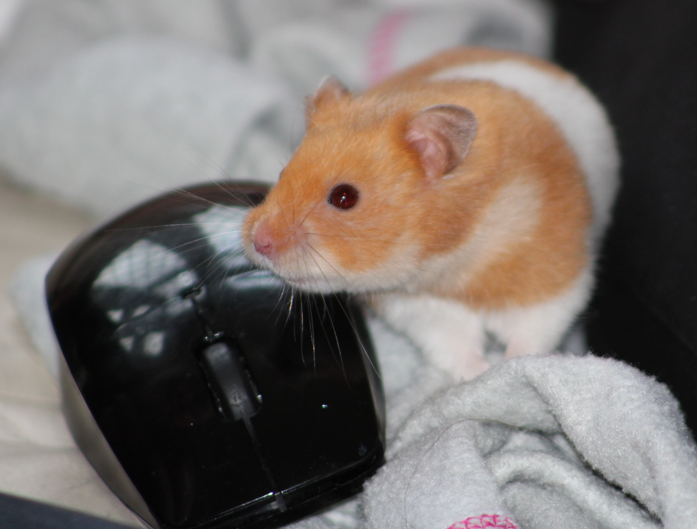
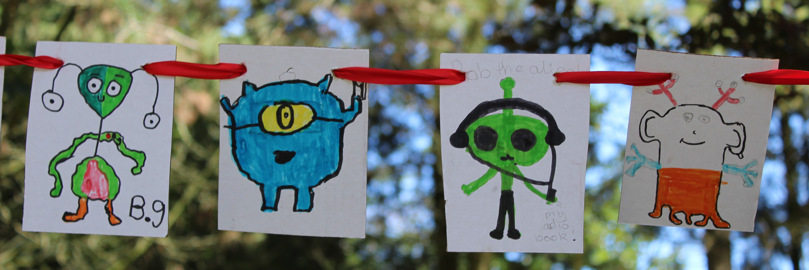
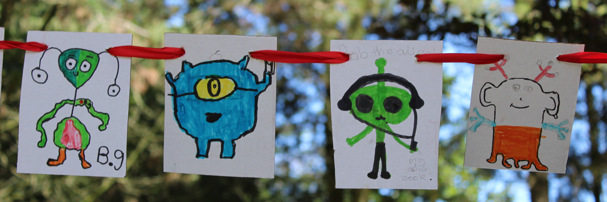

There were no teddy bears in the woods on Saturday.
03-Jul-2017 | Milku
But there was an alien invasion in Stanley Park.
I’m back! All of that 30 days of nature malarkey has finished. I can do my own thing in my own blog again.
I just wish I wasn’t feeling upset…I’m missing one of my little humans who has gone off on a school trip. She had to head off when it was dark on Sunday morning. And I’m not used to so much activity at that time of day. It put me off my usual routine and I couldn’t get around to typing out my blog. I hope you didn’t miss me too much.
If you went down to the woods in Stanley Park on Saturday you wouldn’t have encountered a teddy bear’s picnic. The park was hosting the annual Wordpool Festival, which celebrates the written word and encourages everyone to get reading. Various local schools had been busy drawing aliens. Small pictures of aliens were hanging from the trees.
 

Huge drawings were on display too. Presumably aliens like books…so do I…although I couldn’t eat a whole one…

My littlest human had been busy in school with the Wordpool folks and had drawn her own little alien.
She'd also helped some friends create a big one. They don’t look too scary but it doesn’t take much to make me seek the shelter of my den. I think I’d hide from them just in case.
And just before I settle down for a nap...Do you know what today is? It's Disobedience Day! It's quite often that day in our house...not me you understand...the humans sometimes exhibit challenging behaviour. But do you know what, I'm feeling a little bit naughty today...watch out!